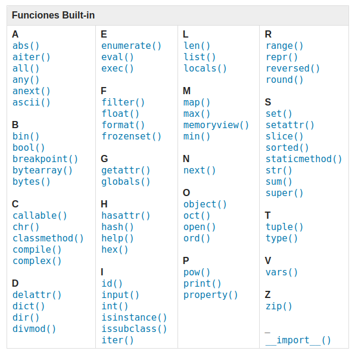

Funciones
Una función es un grupo de sentencias que realizan una tarea concreta. Esta forma de agrupar código es una forma de ordenar nuestra aplicación en pequeños bloques, facilitando así su lectura y permitiendo reutilizar el código que contienen sin esfuerzo.
Definir y llamar a una función
La sintaxis de una función en Python es la siguiente:
Se escribe la palabra reservada def seguida del nombre de la función y sus parámetros entre paréntesis.
Para llamar a una función solo hay que escribir el nombre de la función seguida de los parámetros (si los hubiera) entre paréntesis.
Es posible asignar al parámetro un valor por defecto.
def saludo(nombre = "Anónimo"):
print("Hola, " + nombre+ ". ¡Bienvenido!")
saludo("Leire") # Hola, Maitane. ¡Bienvenida!
saludo() # Hola, Anónimo. ¡Bienvenida!
- Parámetros posicionales: la posición en la que se pasan importa
- Parámetros con palabra clave (keyword arguments): la posición no importa, se indica una clave para cada parámetro.
def suma(a, b):
resultado = a + b
print(resultado)
suma(45, 20) # parámetros posicionales
suma(b=20,a=45) # parametros mediante clave
Las funciones pueden devolver un valor utilizando la palabra return. Una vez devuelto un valor, la función finaliza su ejecución.
Funciones con argumentos múltiples
Es posible recibir un número desconocido de parámetros añadiendo un * en la definición de la función.
def suma_todo(*args):
resultado = 0
for i in args:
resultado += i
return resultado
v, w, x, y, z = 5, 2, 12, 6, 9
total = suma_todo(v, w, x, y, z)
print("La suma total es:" + str(total)) # La suma total es: 34
Ámbito de las variables (scope)
El ámbito de una variable (scope) se refiere a la zona del programa dónde una variable "existe". Fuera del ámbito de una variable no podremos acceder a su valor ni manejarla.
Los parámetros y variables definidos en una función no estarán accesibles fuera de la función. A este ámbito se le conoce como ámbito local. Es importante mencionar que una vez ejecutada una función, el valor de las variables locales no se almacena, por lo que la próxima vez que se llame a la función, ésta no recordará ningún valor de llamadas anteriores.
def calcula():
a = 1
print("Dentro de la función:", a)
a = 5
calcula()
print("Fuera de la función:", a)
### Output ###
# Dentro de la función:1
# Fuera de la función:5
Por el contrario, las variables definidas fuera de una función sí que están accesibles desde dentro de la función. Se considera que están en el ámbito global. No obstante, no se podrán modificar dentro de la función a no ser que estén definidas con la palabra clave global.
Funciones internas
Python proporciona un número importante de funciones denominadas built-in o internas, que pueden ser usadas sin necesidad de tener que definirlas previamente.
Los creadores de Python han escrito este conjunto de funciones para resolver problemas comunes y las han incluido en Python para que las podamos utilizar.
Un ejemplo son las funciones max y min nos darán respectivamente el valor mayor y menor de una lista.
Dependiendo de la versión de Python utilizada, la lista podrá diferir. Para Python 3.10.6 estas funciones son:

Y el funcionamiento de cada una de ellas puede consultarse aquí.
¿Por qué necesitamos las funciones?
Puede no estar muy claro por qué merece la pena molestarse en dividir un programa en funciones. Existen varias razones:
-
El crear una función nueva te da la oportunidad de dar nombre a un grupo de sentencias, lo cual hace tu programa más fácil de leer, entender y depurar. Las funciones pueden hacer un programa más pequeño, al eliminar código repetido. Además, si quieres realizar cualquier cambio en el futuro, sólo tendrás que hacerlo en un único lugar.
-
Dividir un programa largo en funciones te permite depurar las partes de una en una y luego ensamblarlas juntas en una sola pieza.
-
Las funciones bien diseñadas a menudo resultan útiles para otros muchos programas. Una vez que has escrito y depurado una, puedes reutilizarla.
Parte de la habilidad de crear y usar funciones consiste en llegar a tener una función que represente correctamente una idea, como “encontrar el valor más pequeño en una lista de valores”, por ejemplo.
Coding time!
Ejercicio 1
Crea un programa que determine si un número es primo o no. Deberás crear la función esPrimo() que reciba como parámetro un número y devuelva True o False indicando si el número es primo o no.
Ejercicio 2
Crea un programa que genere un número aleatorio del 1 al 10. El usuario tendrá que adivinarlo, y el programa tras cada intento le indicará al usuario si el número es más alto, bajo o si ha acertado. La lógica para dar la respuesta al usuario deberá estar incluida en una función a la que se llamará tras cada intento.
Nota: Para la creación del número aleatorio, utiliza el siguiente código:
Ejercicio 3
Crea un programa que reciba un número del 1 al 20 introducido por el usuario y compruebe si está dentro de la siguiente lista: [6,14,11,3,2,1,15,19]. Implementa una función que se asegure que el número introducido por el usuario está en el rango indicado y otra que compruebe si está dentro de la lista. Trata de crear las funciones de forma que puedan ser reutilizadas lo máximo posible en otros programas.
Funciones integradas
Además, Python posee unas funciones denominadas built-in o integradas en el propio lenguaje. Dependiendo de la versión de Python utilizada, la lista podrá diferir. Para Python 3.10.6 estas funciones son:
Y el funcionamiento de cada una de ellas puede consultarse aquí.